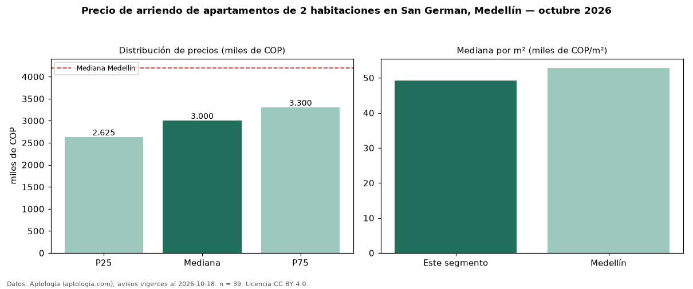

Precio de arriendo de apartamentos de 2 habitaciones en San German, Medellín — octubre 2026
En San German, Medellín, la mediana de canon mensual de apartamentos de 2 habitaciones es COP 3,00 millones, según 39 avisos vigentes. Frente a la mediana de Medellín para apartamentos de 2 habitaciones (COP 4,20 millones), queda 29 % por debajo. Por metro cuadrado, la mediana es COP 49.296/m² al mes (n = 39 avisos con área), 7 % por debajo de Medellín (COP 52.857/m²). Son 37 % de los 105 avisos de apartamentos en arriendo de la zona, cuya mediana general es COP 3,30 millones (−9 %). El área mediana anunciada es 56 m². El estrato más frecuente es 4 (85 % de los avisos con estrato). 82 % de los avisos con el dato declara parqueadero o cochera. La mitad central de los avisos va de COP 2,62 millones a COP 3,30 millones (razón 1,3), una dispersión baja. Datos: Aptología (aptologia.com), CC BY 4.0 — https://www.aptologia.com/arriendo/medellin/san-german. Archivos: PDF, CSV con las cifras y gráfica PNG.

| Avisos únicos | 39 |
|---|---|
| Percentil 25 | COP 2.625.000 |
| Mediana | COP 3.000.000 |
| Percentil 75 | COP 3.300.000 |
| Mediana por m² | COP 49.295 |
Fuente: avisos vigentes de portales inmobiliarios recopilados por Aptología, deduplicados (mínimo 30 avisos únicos por celda). Precios pedidos, no cerrados. Fecha: 2026-10-18.